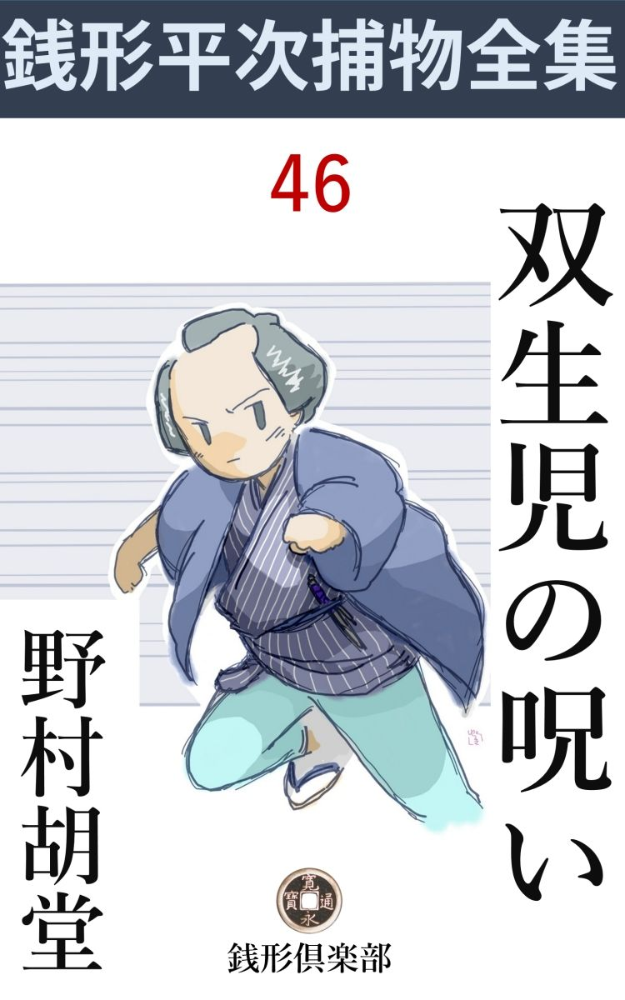
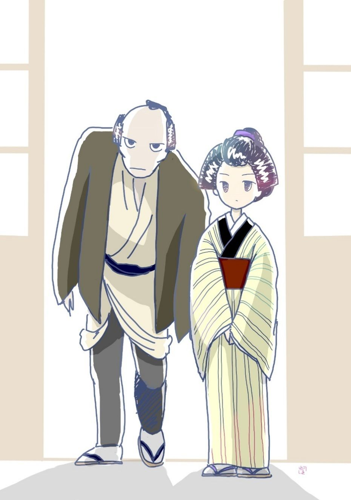

| 双生児の呪い: 銭形平次捕物全集第46話 (銭形倶楽部) | |
| 野村胡堂 | |
| ZENIGATA CLUB (2018) | |

一
「親分、お願いがあるんですが------」
お品はこう切り出します。石原の利助の一人娘、二十四五の年増盛りを、『娘 御 用 聞 』と言われるのはわけのあることでしょう。
「お品さんが私に頼み------へエ------それは珍らしいネ、腕ずくや金ずくじゃ話に乗れないが、膝 小僧の代りにはなるだろう。一体どんな事が持上がったんだ」
銭形平次は気軽にこんな事を言いました。お品の話を、出来るだけ滑 らかに手繰り出そうというのでしょう。何時でも、そう言った心構えを忘れない平次だったのです。
「お聴きでしょう？ 蔵前の札差に強盗 の入った話を------」
「聴いたよ。たった一人だが、疾風 のような野郎で、泉屋の一家ばかり選って荒して歩くという話だろう」
二た月ほど前から虱潰 しに泉屋一家を荒して歩く曲者、------どんなに要心を重ねても、風の如く潜り込んで、かなり纏 った金をさらった上、障 る者があると、恐ろしい早業で、大根か人参のように斬って逃出す強盗のことは、平次もよく承知しております。
「お父っさんはあの通りのきかん気で、身体が言うことをきかないくせに、八丁堀の旦那方に小言を言われると、ツイ請合って帰ったのだそうです。------泉屋一家で、荒し残されたのは、あとたった二軒、それがやられる迄には、きっと縛ってお目にかけますって------」
「------」
「こんど逃がせば、十手捕縄を返上しなければなりません、どうしましょう親分」
「なるほど、それは心配だろう。どんな手口だか私も知らないが容易の捕物じゃあるまい」
「よく霽 れた月のない晩に限って押込みます、今晩あたりも又何か始まるでしょう。お父っさんは一人で威張っていますが、子分と言っても役に立つのは二三人------まさか私が出かけるわけにも行かず、素人衆は幾人手伝って下すっても、本当に気が廻らないから、何時でも網の目を脱けるように逃げられてしまいます。------親分に来て頂くと申分がありませんが、それでは又父さんが気を悪くするかも知れず」
お品は淋しそうでした。平次とすっかり融和しているようでも、利助にはまだ年配の誇りと、妙に頑 固 な意地があったのです。
「気のきかない話だが、俺も心配をしながら遠慮していたのさ。------それじゃこうしようじゃないか。あの通り欠伸 ばかりしているから、早速八の野郎を差向けて見よう。大した役には立つまいが、それでも素人よりはましだろう。八五郎でうまく行かなかったら、その時は俺が出て見るとしたらどんなものだろう、石原の兄 哥 へは、お品さんから------手不足で困るから、案 山 子 の代りに八五郎を頼んで来たと言えば済む------」
平次はそう言いながら、ガラッ八の方を振り返りました。案山子と言われたのが不足らしく、そっぽを向いて頤を撫でております。
「そうして下されば、どんなに助かるかわかりません」
お品はホッとした様子で白い顔を挙げました。聰明さにも美しさにも、何んの不足もないお品を見ると、平次は、つくづくこう言った心持になるのでした。
「お品さんが男だったら、大した御用聞になるだろう------惜しいことだね」
「あれ、親分、そうでなくてさえ、------娘御用聞とか何とか言われる毎に、私は身体が縮むほど極りの悪い思いをします。せめてお父っさんが確りしているか、子分に任せられるのがあれば、私はお針でもして引込んでいたいと思います」
「いや、とんだ事を言って済まなかった。------お品さんが良い婿 でも取って、御用を勤めるようになったら、石原の兄哥も、さぞ安心するだろうと思ったのさ」
平次は照れ隠しにそんな事を言わなければなりませんでした。
「そんな気になれないんで、お父っさんに苦労をさせます。今さら十手捕縄を返上して、番太の株を買うわけにも行かず、七八人の子分の暮しの事も考えると、どうして私は女なんかに生れて来たのかと、------親分」
お品は涙ぐんでおります。気に染まぬ婿を取るのがイヤさに、親父の後見をして、御用聞の真似事をしている自分が、つくづく浅ましかったのでしょう。
「鳥越の笹屋宗太郎が、今でもお品さんを付け廻しているという話だが------、あの男なら、利助兄哥を安心させるだろうと思うが------」
「親分」
お品は怨めしそうでした。武家上がりのくせに、因 業 で通った宗太郎、町人をいじめて、充分金は出来たという話ですか、跛 足 で変屈者で、一二年越し口説き廻されながら、お品はどうも受け容れる気になれない相手だったのです。
二
「八、聴いたろう、日が暮れたら出掛けてくれ」
「案山子の一と役ですかい」
ガラッ八は少し膨 れております。
「嫌味を言うな。俺の口から＝八五郎は大した腕だから、さぞお役に立ちましょう＝とは言えないじゃないか」
「御もっともみたいなもので、へッへッ」
「大層腹を立てたんだね、------もっとも手前は腹を立てると好い男になるぜ、ゲラゲラ笑っていると、反っ歯が、飛出すから------」
「もう宜うがすよ、親分」
ガラッ八は泳ぐような恰好で平次の皮肉を封じました。
「お品さんが折角 頼んで来たんじゃないか。ともかく、行って見てやるが宜い」
「行きますがね、親分、曲者の見当だけでも付かないと、捉まえようがありません。泉屋一家ばかりを狙うのはどうしたわけでしょう」
ガラッ八の疑問は、その頃の江戸中の人の疑問でした。
「それが判りゃわけはないよ。商売敵か、家督 争いか、高利の奥印金に悩まされた御家人か------いずれそんなものだろう」
「へエ------」
「切半 や役料を捌 いて、細い口銭を取っただけじゃ、札差が千両株と言われる道理はねえ。あの豪勢な暮しの裏には、飛んだ罪も作っているだろうじゃないか」
平次はそんなところまで見当を付けましたが、それ以上のことは素より解りません。
八五郎のガラッ八が、旅籠 町の泉屋へ行ったのは、酉刻 少し過ぎ、利助の子分は五六人、平右衛門町の隠居泉屋と旅籠町の泉屋の本家に別れて、左右前後から目を配っておりました。
「よう、八五郎兄哥 、お指図を頼むぜ」
誰やらが早くも見付けて嫌味を言うと、
「あ、宜いとも」
臆 れた色もなく、こう言って反身になる八五郎だったのです。
間もなく石原の利助がやって来て、人数を四組に分けました。
「八兄哥には泉屋の店口を頼むぜ。筋向うの辻番から、伊 三 松 と交 り番こに睨んでいりゃ宜い」
「へエ、承知しました」
八五郎は早速辻番の波障子の中にもぐり込みました。中には顔見知りの伊三松、三十前後で、ガラッ八とは馬の合いそうな男がおります。
「八兄哥、頼むぜ、------今まで泥棒は、札 旦那 （客）や御用聞や医者に化けて、見張の中を大手を振って押込んだんだぜ。亥 刻 過ぎに泉屋へ入ろうとする者があったら、出前持でも、飛脚 でも構わねえ、縛り上げて泥を吐かせることだ」
伊三松は説明してくれました。なるほどこれほど研究が積めば、悪者も羽を伸してはいられないわけです。
「泉屋から出るのは構わないのかえ、兄哥 」
「出るの？」
「迎いが来て、番頭は今しがた出て行ったぜ。通いらしいから、いずれ家に急病人でもあるんだろう」
「そいつは気が付かなかった。ちょいと行って訊いて来ようか」
伊三松は飛んで行きましたが、間もなく帰って来て、ガラッ八の鑑定が悉 く当ったことを報告しました。通い番頭の久七がこの騒ぎの中へ踏み止って、お店大事と指図をしていると、女房が急病だから------と言う使があって、ともかく一応見に行ったと言うのです。
師走の夜の空は、宵から雪模様になって、風はありませんが、妙に底冷えのする晩でした。
「こんな時は曲者だってうろつく のは骨が折れるだろう。自分の巣の中に潜って、晩酌でもやっているんじゃないか」
八五郎はこんな事を言います。自分がお役目を好い加減にして、パイ一にあり付きたかったのでしょう。
「月のないよく霽れた晩に限って荒し廻る曲者だ。この空合じゃ、泥棒より雪の方が先に来そうだぜ」
伊三松も喉の鳴るのを我慢していたのです。
「泉屋の表は締めてあるし、店には多勢寝ずの番がいるし、こう見張っているだけが無駄みたいなものさ」
「自棄 な寒さじゃないか」
「ハクショ」
そんな話をしていると、番太の親爺が、戸棚を開けて、貧乏徳利を一本持出して来ました。
「貰ったのがありますが、ちょいと燗 をつけましょうか。たんとはいけねえが、ほんの少しばかりなら、寒さ凌 ぎになりますよ」
「爺 さん、そいつはいけねえ、飲むなら向うの隅っこで一人でやんな、見せびらかすのは殺生だぜ」
ガラッ八はさすがに良心がありました。が、しかしその良心は何時まで続くことでしょう。やがて亥 刻 半 という頃、辻番の前を泉屋の提灯が通って、真向うの表戸を開けて入ったのを見た頃は、ガラッ八も伊三松も、酔 眼 矇 朧 として、一升の酒の量の良いことを褒めたたえていたのです。
「番頭が帰ったようだぜ」
「あれが泥棒だったら？」
伊三松はまだほんの少しばかり職業意識があります。
「小僧が臆病窓を開けて、顔を見てから入れた様子だ、------第一あの泉屋と書いた提灯が物を言わア」
ガラッ八はすっかり好い心持そうです。
が、間もなく泉屋の中は、煮えくり返るような騒ぎが始まりました。
「泥、泥棒ッ」
夜の街を筒抜けに、小僧の金切声。
「それッ」
ガラッ八と伊三松は酔も興も醒めて、驀地 に泉屋の店口に飛び付きます。
内からサッと開く戸、中は真っ暗。
「御用ッ」
真っ先に飛び込んだ伊三松の十手は、曲者の脇 差 に叩き落されました。
「神妙にせい」
続くガラッ八は、曲者の背後から、ガッキと羽掻 締 めに組み付きます。
「灯 、灯」
誰やらの声が甲 走ると、気のきいたのが、奥から手燭を持って来ました。
淡い灯が一と筋、帯ほどの幅で射すと、曲者は脇差を逆手に、ガラッ八の腹のあたりを突いて来ます。
「糞でも喰らえッ」
ガラッ八は片手を抜いて、その利き腕を掴みました。御用聞中の無双の強力、曲者も早業を封じられて、さすがに、閉口した様子です。
「えーッ」
激しい気合と共に、曲者の身体はガラッ八の腕を脱けました。脇差に気を取られて、羽掻締が緩んだのでしょう。もっとも、脇差は幸いガラッ八の手に残って、曲者は素手のまま、唯一の逃げ道なる表口へ飛び付いたのです。
「待て待て」
続くガラッ八、伊三松、多勢の番頭手代小僧。
「えい」
曲者が振り返って、頬冠りの中から一と睨みすると、それも大方は逃げ散って、ガラッ八の手が僅かに顔を包んだ手拭に掛ります。
が、曲者にどんな業 があったものか、脇差の鞘 が宙を飛んで、手燭を持った小僧の額を打ちました。
「あッ」
見事に仰 け反 って、手燭は消えます。
「御用ッ」
「逃がすなッ」
一瞬にして、闇の中に大混乱が起ったのです。相 撲 つ肉の音、絶叫、悲鳴、それは闇の鳥 屋 の中へ棒を入れて掻き廻すような騒ぎでした。
「捕 った捕った」
高らかに響くガラッ八の声。
「畜生ッ、離せ、何をするッ」
その下に泥を嘗 めながら喘ぐ声は誰とも解りません。
第二の灯が用意されました。野分の後のような大混乱の店先に、ガラッ八の糞力 に組み伏せられて、フウフウ言っているのは、誰あろう、石原利助の一の子分、伊三松の忿怒に歪む顔だったのです。
三
「昨夜は大層な手柄だったそうだな、八」
「へエ------」
銭形平次の前に、八五郎はもうすっかり恐れ入っております。
「曲者が伊三松とは知らなかったよ」
「からかっ ちゃいけません、親分」
ガラッ八は耳の後ろを掻きながら、何やら気に済まぬ様子で、平次の顔ばかり見ております。
「伊三松は鼻の先を摺り剥いて大むくれさ。石原の兄哥も言っていたよ、------御親切はかたじけないが、同志討は困るって------」
「親分、そんな事より、私にはどうも腑 に落ちない事があるんだが」
「なんだえ、腑 なんぞに落ちた例 のねえ手前 じゃないか」
「笑っちゃいけませんよ、親分」
ガラッ八はまだ迷っております。
「先刻から笑ってなどいない積りだったが」
「真顔で冷かされるから、なおかなわねえ」
「贅沢だな、------笑っていかず、真顔になっちゃいかずと言うと、俺に泣いて見せろとでも言うのか」
「ね、親分、真面目に聴いて下さい。私は、------こんな事を言うと、笑われると思って黙っていたんだが、ゆうべ曲者が逃げる時、頬冠 を剥いだはずみに、ほんのちらり と顔を見ましたよ」
「何だと？」
平次は急に真顔になると、ガラッ八の方へ向き直りました。
「そんな筈はないと思うから、黙っていましたが」
「その曲者は誰だ、------言って見るが宜い」
「笑っちゃいけませんよ親分」
「誰が笑うものか、俺はお前のドジさ加減に腹を立てているんだ、曲者の顔を見て黙っている御用聞が、どこの世界にあるんだ」
「それがね、親分、------頬冠を取ると灯が消えると一緒だ、ちらりと見たばかりだから、万一間違いと言うものが------」
「くどいなア」
「笹屋の宗太郎ですよ、親分」
「何だと？」
「それ、親分だって驚くでしょう、あの右の足が二三寸短い大 跛 者 の、しみったれの傴僂 が------」
「フーム」
銭形平次もこれには唸らされました。笹屋の宗太郎は、傴僂で跛者で、その上小金を貸して、細い利潤 を楽しむ、名題の握り屋です。第一、一寸男振りこそ踏めますが、あの病弱そうな蒼い男が、老獪な御用聞共を、手玉に取るような離れ業が出来よう筈はありません。
「宗太郎には兄弟が無かったか」
平次は早くもそんなところまで気が廻ります。
「ありますよ、------私 もあんまり変だから、それとなく訊いて見ると、宗次という双 生 児 の弟があったそうですが、二年前に死んだという噂で、------もっともこれは打つ買う飲むの三道楽に身を持崩して、ひどい野郎だったそうです」
「フーム」
平次にもいよいよ解らなくなりました。笹屋の宗太郎なら、お品を嫁に欲しがっている男で、一と通り知っておりますが、縄張外のことで、死んだ弟の宗次までは知らなかったのです。
「ね、親分、私が言い兼ねたわけは解るでしょう」
「いや、そんな事を遠慮する奴があるものか。こうなれば躓 ずく石っころも手掛りだ、さっそく宗太郎の様子を探って見よう」
が、平次が出かける迄もありませんでした。丁度そんな話をしているところへ、利助の娘お品が笹屋の宗太郎を案内して来たのです。
「宗太郎さんが、どうしても平次親分に逢ってお話がしたい、このままにして置くと殺されるかも知れない------と言うんです」

嫌で嫌でたまらない求婚者をここまで伴れて来たお品には、父に代って、曲者を挙げようと言う、熱心な職業意識の外には何にもなかったのです。
「これは親分さん、一二度よそながらお目に掛ったことも御座いますが、私は笹屋の宗太郎で御座います。早朝からとんだ御迷惑ですが、実は思案に余って伺いました。ここへ来たと知れたら、私の命が危ないかも知れませんが、そうかと言って、これほどの大事を黙ってもいられません」
宗太郎の蒼い顔は、恐怖と不安に、ワナワナ顫えております。
部屋へ入って来るのをよく見ていると、右足は左の足にくらべると、どうしても二寸は短かいようです、唐 臼 を踏むような大 跛 者 で、それに左の肩の下がった猫背も、何となく、不具者の痛々しさを強調します。
「なるほど、仔細 がありそうだ。詳しく聴きましょうか」
平次も思わず膝を進めました。
四
「親分、聞いて下さい。この世の中に私のような不仕合せなものがあるでしょうか」
笹屋宗太郎の話は、冒頭 からこの調子でした。涙を誘うような、煽情的 なものではないまでも、世にも陰惨な、不愉快なものだったのです。
宗太郎の父親は笹枝宗左衛門という三百五十石取の立派な旗本でした。が、つまらぬ事から上役の疑いを受け、それに役目の上の手落ちもあって、家禄を没取された上、世に顔向けもならぬような目に逢いました。
つくづく武士は嫌だ------と、潔ぎよく両刀を捨て、鳥 越 に世帯を持って、貯 えの小金を融通し、利潤が積ってかなりの身代を作りましたが、今から三年前他界、世帯はそのまま総領の宗太郎が継いで僅か三年の間ながら、酒や女はもとより、あらゆる道楽と縁のないのが仕合せで、身代は太るばかりでした。
「たった一つ困ったことは、双生児の弟宗次で御座います。これは、私と違って身体もよく、心構えも逞 ましく、体術武術の心得もあり、子供の頃から世間様の褒 めものでしたが、親同士の話合いで、泉屋の養子になる積りでいると、その縁談が向う様の都合で破談になってからぐれ 出したので御座います」
「------」
泉屋と宗次の関係------始めて聞く暗示に、平次は何もかも読んでしまったような気になりました。
「それからは、飲む、打つ、買うの三道楽で、私が小遣をやらないと、刀を抜いて脅 かし、外へ出ると、押借、強請 、いかさま博 奕 までやるようになりました」
「------」
「もっとも、宗次にも言い分がありました。兄弟と言っても双生児だから、どっちが兄どっちが弟と言ったところで、確かな差別 のある筈はない、親父の溜めた身上 、皆んなと言わないから、せめて半分よこせ------とこう言うのでございます。まことに無理のない話で、私もツイその気になる事もありましたが、父親が生きている頃、間違っても宗次には金をやってはならぬ、それを湯水のように費い散らすだけなら宜いが、人様に迷惑をかけなければ納まらぬ奴だ、------小人玉を抱いて罪あり------父は武家上りで、よくこんなむずかしい事を言っては私を教えました」
「------」
平次は黙って聴いております。
「宗次の乱行は日に日に募って、何べん私を殺そうとしたかわかりません。とうとう我慢が出来なくなって、今から二年前、三百両だけ分けてやって、兄弟の縁を切り、世間へは死んだと言いふらして、上方へやりました。何か身につく商売でも覚えさせようと思ったので御座います」
「その宗次とやら言う弟さんが帰って、泉屋一家へ仇をしている------とこう言いなさるのだね」
平次は珍しく先 潜 りをして、宗太郎の話の腰を折りました。そうでもしなければ、いつまでも愚痴を並べていそうで、我慢がならなかったのです。
「お察しの通りで御座います、親分さん、兄が弟の事を訴人するのは、よくよくではありますが、あんなに世間様を騒がせて、いつまでも黙っているわけには参りません。私がこんな事を言ったと知れたら、兄弟の見境もなく、斬るの殺すのと言うでしょうが、それも致し方御座いません。いつまでも知らん顔をして、石原の親分さんや、お品さんに苦労を掛けるのも心苦しく、思いきってここへ参りました。それに------」
「お前さんは宗次に逢いなすったのか」
「いえ、二年前に別れたきりで御座います。三百両の金はとうに費ってしまったでしょうが、久離 切った兄のところへ顔を出すのがおっくうで泉屋さんを困らせているのかもわかりません」
「泉屋一家を荒しているのが、どうして弟の宗次と解ったのだえ」
「それで御座います、親分さん、泉屋一家ばかり狙うのは、縁談の事で怨んでいる、弟の外には思い当りません、------それに、昨夜は私のところへも押込んで、手文庫から五十両ばかりの金を持って逃げました」
「それが弟の宗次だと言うのか」
「宗次の外に、手文庫の隠し場所を知ってる者がありません」
宗太郎の言うのは、何となく纏 りがありませんが、それでも愚痴っぽい繰言の中にも、次第に筋道が立って来ます。
「お前さんのところに雇人は何人いるんで？」
「番頭は通いでしたが、これは半月前に止めさせました。あとは小僧が一人、下女が一人、私と三人暮しで御座いますが、皆んな早寝の早起で、泥棒の入ったことなどは、誰も知りません」
「フーム」
平次はもう一度腕を拱 きました。
「それでは親分さん」
宗次は帰りかけましたが、平次のむずかしい顔を見ると、立上がり兼ねてモジモジしております。
「たった一つ訊きたいが、お前さんの弟は、お前さんによく似ているだろうね」
「それはもう、双生児の男同士で、子供の時は親父にまでよく間違えられました。年を取ると次第に気性が違って来たのと、弟は身体が丈夫で、顔色も艶々しておりましたから、家の者に間違えられるような事はありません」
「暗がりで、ヒョイと他人が見たら------」
「それなら、私と弟と間違えても不思議はありません」
「有難う、それで大方解った」
「それでは親分さん、何分宜しくお願い申します。悪い奴でも、肉身の弟に変りは御座いません、決して処刑 に上げたいわけではないのですが------」
五
その晩は雪、ツイ油断をしていると、平右衛門町の隠居泉屋夫婦が、離屋の中で殺され、有金五六百両が紛失しておりました。これが、泉屋へ祟 った曲者の最後の仕事でしょう。お品のところから通知があると、
「それ行け、------八」
ガラッ八と一緒に駆け出した平次は、いきなり途中から道を変えて、鳥越の方へ外れます。
「親分、どこへ？」
「俺はちょいと信心をして行く。手前 は現場へ真っすぐに行くが宜い」
「へエ------」
何の信心だか解りませんが、ガラッ八は雪を踏立てて、平右衛門町へ飛びました。
平次はその後ろ姿を見送りながら、鳥越の笹屋の裏路地へ、そっと潜 るように入り込んだのです。
「おや、銭形の親分さん」
「大層精が出るんだね、宗太郎さん」
まだ卯刻半 （七時）というのに、主人の宗太郎は、尻を端折って、雪を掃いていたのです。大 跛 者 で不自由そうですが、それでも、金を貯める性 の人によくある、労働を享楽する心持はよく呑込めます。
「表は小僧に掃かせましたが、どうも、ぞんざいでいけませんよ」
そういう言葉が、聞きようでは、弁解らしくも響きます。
「ところで、ゆうべ弟の宗次が来たろうか」
「へエ------、又何かやりましたか、ここへは顔を出しませんが。------もっとも、来たらうんと意見をしようと思っていますが、盗られた五十両が惜しいわけじゃありませんが、あれじゃ人の道が違います、ね、親分」
「そう言ったものだろうな、------ところで、宗次が立ち廻ったら、さっそく届けて貰いたいが、匿まったりすると、大変なことになるが------承知だろうな」
「へエ------」
「それじゃ頼みますよ」
「何かありましたんで、親分」
「なアに、大した事じゃない」
泉屋の隠居二人を殺した大事件を、------しかも、半刻経たないうちに知れる筈のことを、平次は教えようともせずに背 を見せます。
そこから平右衛門町までは一と走り、平次が行き着いた時は、雪と碧 血 の中に、検死の役人と石原の利助の姿と、泣きわめく泉屋一家の大混乱を見せられるばかりでした。
こんな騒ぎの中から、何を捜し出せるものでもなく、唯もう平次は茫然として、血と雪と人間の渦巻を見詰めておりました。
「まさかあの雪にと------思ったのが油断でした。いつも来る按 摩 だと思って油断をしていると、亥 刻 前から入り込んで、どこかに隠れ、夜中過ぎに離屋へ入って、年寄夫婦を害 めたのでしょう」
番頭の仁兵衛が、それでも一番冷静に、いろいろの事を説明しております。
「お、銭形の」
石原の利助は救われたような顔で迎えました。これだけ曲者に翻 弄 されると、我慢の角も折れて、銭形平次が唯一の頼りだったのです。
「目星は？ 石原の兄哥 」
「何にも解らない。笹屋の宗次の行方を捜しているんだが、------まさか兄の宗太郎が匿まっているような事はあるまいネ」
「それに気が付いたから、ここへ来る前に、鳥越へ廻って見た。そんな様子はねえ。宗太郎は小僧と二人で一生懸命雪を掃 いていたぜ」
平次の真意はそこにあったのです。
「逃げ込んだ弟の足跡を隠すためじゃあるまいネ」
「なんとも言えない」
「行って見ようか、銭形の」
「それも宜かろう」
二人は、後を子分共に頼んで、もういちど鳥越に引返しました。
笹屋の宗太郎は、先刻平次と逢った時とは、打って変ったあわてた姿でした。
「あ、親分さん方、大変な事になりましたな、とうとう泉屋の御隠居夫婦が------」
「お前さん、それを弟のせいだと思いなさるかえ」
「------」
宗太郎の顔は苦悩に歪んで、咽喉仏 が上へ下へと動きます。
「一応家の中を見せて貰いたいが、宜いだろうな」
利助の調子は冷たくて非妥協的でした。
「へエ------」
二人は上がり込むと、裕福らしいが狭い家の中を、隈なく見て廻りました。入口の二畳、次の六畳、そこにはお仏壇があって、その後ろはお勝手と、不似合に贅沢な風呂場、下女と小僧の寝間、それから八畳一と間、納戸と押入、便所、その奥に、宗太郎の寝間の四畳半が、縁側の先へ継ぎ足したように建て増してあります。
天井にも、床下にも、人間一人隠す場所はありません。
「立派な刀箪笥 だが------」
平次は古い箪笥の前に立っております。
「親父が武家上がりで、二三十本ありましたが、性の良いのは売ってしまいましたし、手頃なのは、弟が持出しました」
なるほど、残るのはほんの三四本、それもいい加減のものばかりで、下の方の抽 斗 は着物箪笥に変っております。
「この拵えに見覚えはないかえ、石原の」
平次が取出したのは、蝋 塗 鞘 、赤銅 の鍔 、紺糸で柄 を巻いた、実用一点張の刀です。
「お、これは一昨日の晩、泉屋本家へ曲者が残して行った脇差と同じ拵えだ」
「そうだろう、------どうも揃った道具らしいが刀だけが後 家 になっているのはおかしいと思ったよ」
銭形平次は、さり気なく宗太郎の顔を見やります。
「親分、------やはり弟が」
宗太郎は柱へよろけ ました。
「宗太郎、隠しちゃためにならないよ。弟はどこにいる、------お前は知っている筈だ」
「いえ、何にも存じません」
宗太郎はもう顫えております。
「小僧と下女を呼んで調べようか、銭形の」
利助は勢 い立ちました。
「それも宜いだろう」
そう言う平次の前へ、小僧と女中は呼出されました。吉蔵と言う十三四の少年と、おさめと言う山出しらしい二 十 歳 前後の女です。
「隠さずに言うんだぞ。お前達はこの家へ奉公してから何年になる」
「私は二た月前で、おさめどんは、一と月にしかなりませんよ」
吉蔵は先輩らしい優越感にひたります。
「その前の奉公人は？」
「みんな暇を取りました」
「それでは聞くが、近頃、ここの弟という人は来なかったか」
「存じません」
「旦那によく似ているが------」
「知らねえだよ」
これでは手の付けようがありません。
六
「それじゃ、昨夜とその前の晩、旦那の宗太郎さんはこの家にいたかい」
平次は利助に代って問いかけました。
「いましたよ。旦那はお金の勘定が好きで、夜更けまで算 盤 をはじいていますよ」
小僧の吉蔵はこまちゃくれた事を言います。
「お前は見たのか」
「いえ、夜中小用に起きた時、旦那の部屋に灯りの点いているのを見ただけです」
「話声は聞かなかったか」
「否 」
平次の問もそこで行詰りました。
「旦那は夜更けにお前達を部屋へ入れないのか」
「へエ------、金の勘定などを奉公人は見るものじゃないって叱られます。戌刻 半 から先は旦那の部屋へ行かないことにしているんです」
「それで、算盤を弾いているんだね」
「へエ、昨夜もその前の晩も、亥刻から夜中過ぎまで、引っ切りなしに算盤の音がして、うるさくて、眠られませんでしたよ」
生意気そうな小僧の吉蔵は、恐れ入った宗太郎を顧みます。
「それで宜い。悧巧そうな小僧さんだ、どりゃ」
平次はもういちど立って離屋 を覗きました。手文庫と、手習机ほどの机が一つ、帳面が五六冊、それを繰って見ると、ところどころ筆 跡 は違っていますが、宗太郎はかなり手広く金を貸して、近頃は取立てる方に力を集注している様子までよくわかります。
机の上に算盤が一つ、その先がすぐ雨戸で、雨戸には小指の先ほどの小さい穴があいておりますが、始終何人か紐でも通して合図をしたものか、穴の縁 が摺れているのも疑えば疑えます。
沓脱 の上にも下にも履物はありませんが、縁の下を覗くと竹細工の玩具にしては少し大きい風車が一つ。引出して見ると、まだ真新しいもので、柄の方に二つ三つ穴が開いているのも変っております。
平次はそれを持って元の部屋へ帰ると、
「これは何だ」
宗太郎の胸先に突付けました。
「へエ------」
「江戸では見かけない品だ、------弟の宗次が持って来た物に相違あるまい。どうだ」
「------」
「兄が弟を庇うのは無理もないが、諸人の迷惑、公儀の御手数を考えて、この辺で白状したらどうだ。匿まった罪は、兄弟の情誼 を考えて、この場限り忘れてやるが------」
「へエ------」
「まア、坐れ。不自由な身体で、そう立っていちゃ苦しかろう」
「有難う御座います。------みんな申上げますが、きのう銭形の親分さんのところへ行ったのを嗅ぎ付けられて、弟にひどい目に逢わされました。この上私の口から漏れたと知れると、殺されてしまいます」
「隠れ家を言えば、これからすぐ行って縛って来る。お前に迷惑を掛けぬぞ」
利助も口を添えました。曲者の身体へ、次第に手が届くような気持だったのです。
「父親、笹枝宗左衛門が役目の失策を仕出かしたのは、今から二十年も前、泉屋の隠居が盛んなころ、転宿や直 差 （札差いじめに、旗本や御家人の人の悪いのが用いた手段）を父上が旗本仲間に嗾 かしたと思い込んで、少しばかりの落度を、支配の若年寄まで申出たためで、笹枝一家は泉屋の隠居のために家禄を失いました」
「------」
宗太郎は畳の上へ手を突いたまま、思いも寄らぬ事をこう話し出したのです。
「御当所鳥越へ来て、少しばかりの資本 を運転し、どうやらこうやら身上が出来たころ、泉屋の隠居も昔のやり方を後悔して、父上に詫を容れ、又付き合って行くようになりましたが、弟宗次の養子の話から、又仲違いをし、弟はそのために身を持崩して、こんな騒ぎを始めることになったので御座います」
「------」
「不都合な弟には違いありませんが、兄の私から見れば、可哀想でも御座います。どうぞたった一晩だけ名残りを惜ませて下さい。明日になれば、因果 を含めて、きっと名乗って出るように致させます」
「いや、それはなるまい」
と利助。
「では、せめて一日」
宗太郎はポロポロと涙さえこぼしておりました。
七
宗太郎はその上口を開きません。が、縄打って引立てたら命に替えても弟を逃すでしょう。平次と利助も、持て余してそのまま暮れるのを待ちました。
「もう宜かろう、宗太郎、弟はどこにいる」
ガラッ八が手伝いに来たのをきっかけに、平次は最後の問を持出しました。
「いつまで隠しても大罪を犯した弟を助けるわけには参りません、みんな申上げます」
「言ってくれるか、宗太郎」
利助と平次は、左右から詰め寄りました。
「今頃は父親の墓に名残りを惜んで、隠れ家へ納まっておりましょう」
「父親の墓へ------？」
「左様で御座います。山谷の正伝寺に父親の墓があります。讐を討った弟は、そこへ行ったに相違御座いません」
「なるほど、どうしてそれに気が付かなかったんだ」
平次は口惜しがります。
「門前の花屋の親爺は、昔使ってた若党で御座います。弟はそこに身を隠しております」
「有難い」
と利助。
「八、ここを頼むぞ。帰って来るまで、その男から眼を離すな」
平次もつづいて飛び出しました。一気に山谷の正伝寺へ------。
が、これは何と言う見当違いでしょう。山谷の正伝寺へ着いたのは酉 刻 半 頃、門前の花屋へ飛び込むと、三十年後家を通した婆さんが一人、その姪 という娘が一人、笹枝家へ奉公したという親爺もいず、たった二た間の家を、嘗めるように捜しても、宗次とやらが隠れている様子もありません。
第一、正伝寺の墓場には、笹枝家の墓などと言うもののないことは、花屋も、納所の小坊主も保証をしております。
「これはどうだい、銭形の」
利助は花屋の店先にドッカと腰を据えました。
「石原の兄哥、俺達は大変な間違いをやらかしたらしいぜ」
「宗太郎が嘘をついたのか」
「それに違いないが、嘘も、念入り過ぎるぞ」
平次は考え込みました。
「それじゃ引返して宗太郎を引立てよう」
「いや、もう逃げてしまったろう。あんな悪く悧巧 な奴に逢っちゃ、八五郎なんどはなんの役にも立たぬ」
平次は利助と並んで腰をおろしてしまいます。
「ここへ坐り込んじゃ困るぜ、銭形の」
「待ってくれ、兄哥、俺は大変な事を見落していたんだ------一昨日の晩曲者は八五郎に顔を見られると、その翌る朝、宗太郎が双生児の弟を訴人に来た、------そのくせ弟の隠れ家を知っていると睨まれると、急に弟を庇 い出した、------それから小僧と下女は、夜っぴて算盤の音を聞いたと言うくせに、宗太郎の姿を見ていない、------夜になると、自分の部屋に引込んで、奉公人を一人も近づけない」
「------」
平次の深沈たる顔を、利助は不安そうに眺めるばかりです。
「奉公人は二月前にみんな変えた、帳面の筆跡もそのころ変っている、------風呂場は急拵 だが、不似合いに贄沢で、お姫様の風呂場のように、内から厳重に鍵が掛るようになっていた------刀箪笥には後家になった刀があって＝同じ拵えの脇差は曲者が持っていた＝風車は雨戸の外へ仕掛けて、夜風にクルクル廻ると、その柄を机の前へ持って来て、あの穴へ竹箸でも仕掛けると、風の吹く毎に算盤の球をパチパチ弾かせることも出来る------」
恐ろしい疑惑に利助も顔を挙げました。
「宗太郎と宗次は、親も間違えるほど顔が似ていた。とすると、------あの宗太郎と名乗るのが、その実は弟の宗次かも知れない」
「跛足 はどうする」
利助は相談すると、
「そうだ、あの跛者は偽 じゃない」
平次は愕然としました。
「とにかく帰ろう。こりゃ、大変な事になるかも知れない」
二人は花屋を飛出しました。一気に鳥越の笹屋へ------。
ガラリと格子を開けると、
「あッ、親分」
ガラッ八は元のまま八畳に脂下っていたのです。
「宗太郎はどうした」
「親分方へ正伝寺と言ったが、あれは広徳寺 の間違いだから、大急ぎで親分方に教えて来ると言って、半刻ばかり前に出かけましたよ」
なんと言う他愛のなさ。
「馬鹿野郎ッ、だからお前に番人を頼んだじゃないか。どこの世界に親の墓のある寺を間違える奴があるんだ」
「あッ、いけねえ」
「呆れ返った野郎だ」
平次はさすがに怒りましたが、今さらどうすることも出来ません。
「親分、あの宗太郎は弟と共謀 なんで？」
「当り前よ、------が、待てよ、宗太郎はここを出る時、跛足 を引いていたか」
「え、あの跛は生涯癒りゃしません」
「待て待て」
平次は考え込みましたが、いきなり畳の上に坐って、自分の膝を見詰めております。
「親分」
「跛もあんなひどいのになると、両膝が揃わないのが本当だね」
妙なことを言い出します。
「------」
「宗太郎は歩く時は右の足が二寸も短いくせに、坐った時両膝の揃うのはどうしたわけだ」
「親分」
ガラッ八は、平次の気違い染みた様子が気味が悪かったのです。
「八、帯を解け」
「大丈夫ですか、親分」
「気が違ったと思うか、安心しろ、俺は今跛を拵えて見せるから」
八五郎に解かせた帯で、自分の右足の太 腿 を縛ると、その両端を左の肩へ掛けて、帯のあたりで固く結びます。何の事はない、自分の左の肩へ、自分の右足を釣った形、そのなり でそろそろと歩き出すと、
「あッ、親分」
ガラッ八も利助も仰天しました。平次の右足は二三寸短かくなって、左肩下がりの醜怪な佝僂 の恰好になってしまったのです。
「跛者に見えるか」
「見えるどころじゃねえ、宗太郎そっくりだ」
「やはり、あれが弟の宗次だったんだ。二年前に貰った三百両を費い果し、ここへ戻って来て兄貴を殺したが、あると思った現金が、みんな貸になっている------で、兄貴の宗太郎に化けて、貸金を掻き集めながら、怨の ある泉屋に仇をしていたんだ」
平次の明察、もう塵 程 の曇もありません。
「それじゃ、どこへ行ったんだ」
と利助が、これも夢の醒めた心持。
「帳面で見ると、この二た月の間に、千両から掻き集めている、その上泉屋から盗った金を合せると一とかどの身上だが、袂や懐へ入る金じゃない、と言って明日から街道筋は鵜 の目鷹 の目になるから、------船かな」
「なるほど、船だ」
と言ったところで、墨田川の川筋を半刻や一刻の間に、みんな調べる方法はありません。
八
「親分、お品さんは来ませんか」
「何？ お品がどうした」
石原の利助の子分、伊三松が飛んで来たのです。
「さっき石原の家へ、ここの宗太郎さんが来て、弟の隠れ家が判ったが、手に余るから、お品さんにも来るようにって、------誘 い出したそうですよ」
「何だと？」
利助は色を失いました。
「どっちへ行った、伊三兄哥」
と平次。
「それが解らないんで」
「------宗太郎が曲者だったんだ、が騒ぐな、騒ぐと飛ぶぞ、------あの野郎、行きがけの駄賃にお品さんをさらったのだろう」
平次は驚き騒ぐ利助、ガラッ八、伊三松を劬 めて、外へ飛び出しました。
「どこへ行くんだ、銭形の」
利助はすっかり打ちひしがれながらも、お品の身の上を心配して、僅かに若い者と一緒に駆けておりました。
「御厩 河岸 から、石原へ行ったに違いない、が、金と女を積んで、御船手や橋番の眼を潜るのは厄介だから、多分上手へ漕ぎだしたろう」
「すると」
「船を三隻出そう、御厩河岸から追っかけて一艘、それは八、頼むぞ。なるべく人数の多い方が宜い」
「合点」
「伊三兄哥は、両国から出せ。俺と石原の兄哥は、竹町から出して逆に行く。------灯の点いている船に用事はねえ、大きな船は調べるだけ無駄だ、灯のない軽舸 でそっと漕いでいるのがあったら逃がすな」
「合点」
平次の号令は周到を極めます。
× ×
一方はお品、宗太郎に誘われて、何心なく来たのは石原の河岸、もうすっかり暗くなって、往来もありませんが、宗太郎の足取りだけはよく判ります。
「おや？ お前さんの足は？」
驚いたことに、宗太郎の大跛 が、いつの間にやら癒っているではありませんか。
「気が付きましたかえ、お品さん」
「えッ」
「お品さんが跛 を嫌ったように、私も跛の真似は大嫌いさ。二た月越しの辛抱は貸金二千両を掻き集めて、お品さんを手に入れたいばかり」
「お前さんは？」
「宗太郎の弟の宗次だよ」
「えッ」
「驚いたろう、お品さん、跛の意気地なしのしわん 棒の兄貴と違って、私は丈夫で威勢がよくて、金離れの良いのが自慢さ。行こうぜ、兄貴から持越した恋だ」
これが曲者、とはっきり判ると、お品も思わずギョッとしました。
「あれッ」
「どっこい、お品さんは尋常な音をあげる娘さんじゃなかった筈だ。二千両ありゃ当分の暮しに困るまい、双生児宗次の女房は悪くないぜ」
お品の口を塞 ぐと、扱帯 を解いてキリキリと縛り上げました。柄に似ぬ非凡の力で、お品などは羽撃 もさせることではありません。
そっとおろしたのは、軽舸 の中。
「その菰 の下には小判で二千両あるんだ、たいした寝床だぜ。灯は禁物だが、暫らくの我慢だ。塒 へ帰れば、存分に可愛がってやるぜ」
頬から頬へ、そっと通う体温、お品は眼がクラクラする程憤りを感じましたが、無抵抗に、小判の上に寝かされて、どうすることも出来ません。
「俺は一日も早く、お品さんの前に、正体を見せたかったのさ。お品さんと言うものがなきゃ、もう半歳辛抱して、期限になった貸金をかき集めると、三四千両は手に入れられたんだ」
「------」
「が、お品さんに見られたら、跛者 やしわん 棒や、臆病者の真似をしているのは、辛かったぜ」
宗次は自分の英雄的な姿を誇るように、漕ぐ手を休めては時々お品の前に立ち上がるのでした。
「おやッ」
同じ灯のない船が、ヒタヒタと前から迫ります。
「変な船が来るぜ」
それが平次と利助の船だったことは、言うまでもありません。
「宗次、御用だぞ」
「何をッ」
闇を裂 く平次の声を聞くと、宗次は縛ったままのお品を抱いて立ち上がりました。
「悪党らしくもない、お縄を頂戴せい」
宗次は逃れようのないことをはっきり知りました。後ろからは伊三松の船、向うからはガラッ八の船が、これは灯を滅茶滅茶に点けて、篝 船 ほど川面を照しながら、
「御用ッ」
「神妙にせい」
と漕ぎ寄せるので、その人数はざっと二三十人。
「ハッハッハッ、手が廻ったのか。少し油断が過ぎたかも知れぬて、------が思いおくことはない、お品さんと一緒だ、晴れの心中も洒落 ているだろう」
お品を抱き上げたまま、身を躍らせて真黒な川へ------、その時早く、間髪容れぬ投げ銭が、平次の手から流星の如く飛びました。
永楽銭 や文銭では埒があかぬと見たか、取って置きの小判が一枚、二枚、------夜の水の上に閃 めきます。
「あッ」
宗次はお品を舷 に落したまま、自分の身体だけ、水音高く落ち込んでしまいました。
この時、二千両の小判の上には、縛られたままのお品が、流石 に声もなく泣いていたのです。
（編注）
作品中には、身体の障害や人権にかかわる、差別的な語句や表現が見られますが、本書が成立した当時の時代背景等が現代とは異なる古典的な文学作品でもあり、著者が故人でもありますので、底本のままとしました。ご理解、ご諒承のほどをお願い申し上げます。
著者---野村胡堂
挿絵---萩 柚月 © 2017
初出---「オール讀物」昭和十年十二月号 文藝春秋社
底本---「錢形平次捕物全集」第三巻 河出書房 昭和三十一年六月十五日初版
編集・発行 銭形倶楽部